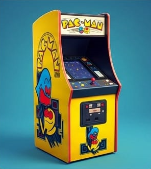
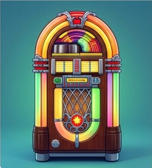
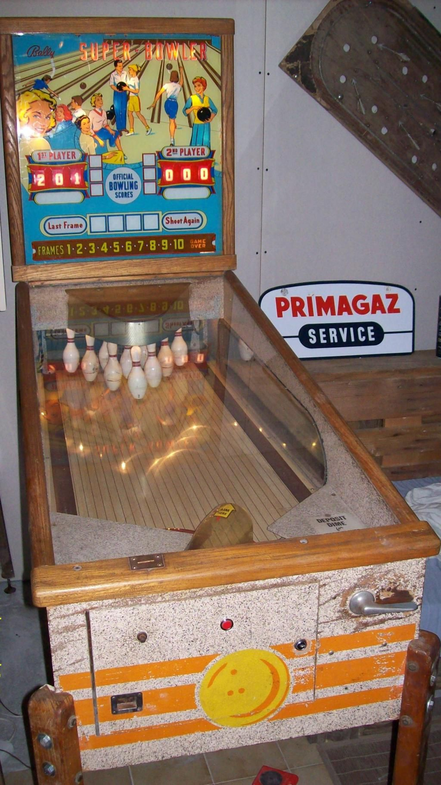

 |
Maquina Pacman (1980) - Un Clasico Indiscutible
Las máquinas Pac-Man Anniversary se lanzaron para celebrar distintos aniversarios de Pac-Man
(25, 30 y 40 años) y también el 20 aniversario de Ms. Pac-Man, siendo producidas por Bandai
Namco Amusement America.
La versión de Ms. Pac-Man/Galaga incluye función de continuar la partida, y tuvo versiones tanto
arcade como domésticas, estas últimas lanzadas por Chicago Gaming Company. Además, han existido
distintos formatos y en 2024 se lanzó una edición casera basada en Pixel Bash.
|
 |
La Rockola - Reproductor Musical de Antaño
Una gramola o rocola es un dispositivo automático que reproduce música al insertar monedas o billetes.
Tradicionalmente era grande, con forma llamativa e iluminación de colores, aunque hoy existen versiones
más compactas y modernas que incluso se montan en paredes.
Antes, las canciones se seleccionaban mediante botones con códigos; actualmente se usan pantallas táctiles
para buscar por artista o canción. Como dato curioso, fueron muy populares en bares y cafeterías desde mediados
del siglo XX, y algunas incluían discos de vinilo o CDs reales dentro de la máquina. Hoy en día, muchas funcionan
de forma digital
|
 |
Máquina retro - pinball
La máquina de pinball es un clásico de los salones recreativos que alcanzó gran popularidad a mediados del siglo XX
y que sigue vigente hasta hoy en versiones físicas y digitales. Su funcionamiento se basa en lanzar una bola
metálica sobre una mesa inclinada, utilizando aletas o “flippers” para mantenerla en juego y sumar puntos
al golpear distintos objetivos
Hoy en día, además de las mesas tradicionales, existen versiones virtuales que recrean la experiencia en
consolas y computadoras, manteniendo vivo el atractivo de este icónico juego de habilidad y reflejos.
|